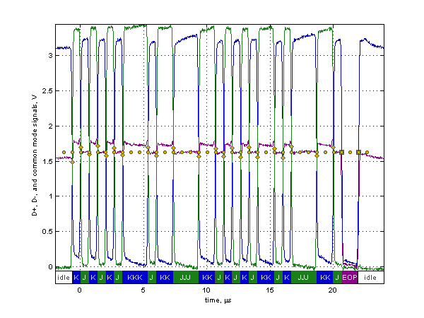
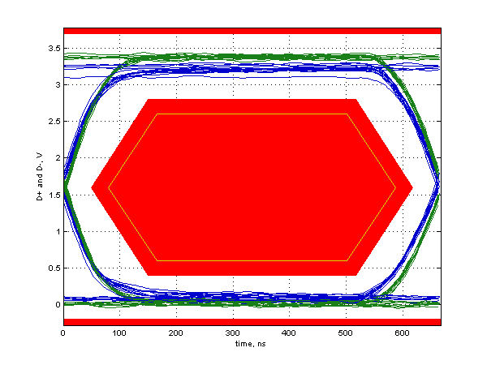

Low Speed Signal Quality Test
Results for LS_H0P1_XPBUSY
For details on test setup, methodology, and performance criteria, please consult the signal quality test description at the USB-IF Compliance Program web page.
Required Tests
- Overall result: pass!
- Signal eye:
eye passes
- EOP width: 1.33 ms
EOP width passes
- Measured signaling rate: 1.4996 MHz
signal rate passes
- Crossover voltage range: 1.49 V to 1.71 V, mean crossover 1.63 V
(first crossover at 1.49 V, 21 other differential crossovers checked)
crossover voltages pass
- Consecutive jitter range: -2.898 ns to 3.536 ns, RMS jitter 1.719 ns
Paired JK jitter range: -2.676 ns to 3.311 ns, RMS jitter 1.841 ns
Paired KJ jitter range: -2.386 ns to 2.547 ns, RMS jitter 1.554 ns
jitter passes
Additional Information
- Rising Edge Rate: 17.95 V/us (Equivalent risetime = 147.10 ns)
(minimum 8.80 V/us, maximum 35.20 V/us)
- Falling Edge Rate: 19.22 V/us (Equivalent risetime = 137.32 ns)
(minimum 8.80 V/us, maximum 35.20 V/us)
- Edge Rate Match: 6.64% (limit +/-20%)
Signal Data and Eye


Tracking Information
- Analysis call: usbsigcheck('C:\Documents and Settings\LeCroyUser\Desktop\Desktop\A9126\new_evb\USB\205\LS\LS_H0P1_XPBUSY.tsv', 'lsne', 6)
- Testing script version: 2.22.03